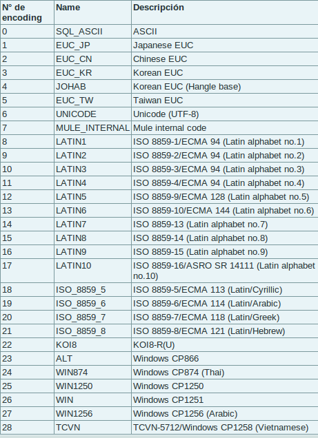

En este tema nos introduciremos en el uso de herramientas de importación/exportación de datos hasta/desde PostGIS. Se realizará la importación con archivos de tipo ESRI ShapeFile y con datos descargados de OpenStreetMap. Para realizar estos procesos, se dispondrá de herramientas como shp2pgsql que vienen incluidas en PostGIS o se utilizarán otras como osmosis u osm2pgsql descargadas desde los repositorios.
El cargador shp2pgsql convierte archivos ESRI Shape en SQL preparado para la inserción en la base de datos. Se utiliza desde la linea de comandos, aunque existe una versión con interfaz gráfica para el sistema operativo Windows. Se puede acceder a la ayuda de la herramienta mediante:
$ shp2pgsql -?
Para el uso de la herramienta:
$ shp2pgsql [<opciones>] <ruta_shapefile> [<esquema>.]<tabla>
entre las opciones encontraremos:
-s <srid> Asigna el sistema de coordenadas. Por defecto será -1
- (-d|a|c|p)
- -d Elimina la tabla, la recrea y la llena con los datos del shape
- -a Llena la tabla con los datos del shape. Debe tener el mismo esquema exactamente
- -c Crea una nueva tabla y la llena con los datos. opción por defecto.
- -p Modo preparar, solo crea la tabla
-g <geocolumn> Especifica el nombre de la columna geometría (usada habitualmente en modo -a)
-D Usa el formato Dump de postgresql
-G Usa tipo geogrfía, requiere datos de longitud y latitud
-k Guarda los identificadores en postgresql
-i Usa int4 para todos los campos integer del dbf
-I Crea un índice spacial en la columna de la geometría
-S Genera geometrías simples en vez de geometrías MULTI
-w Salida en WKT
-W <encoding> Especifica la codificación de los caracteres. (por defecto : “WINDOWS-1252”).
-N <policy> estrategia de manejo de geometrías NULL (insert*,skip,abort).
-n Solo importa el archivo DBF
-? Muestra la ayuda
Realice la importación de los datos de la carpeta Curso/datos/Costa Rica/shp en la base de datos curso.
La importación ha de realizarse en un esquema que se llame gis.
Debe crear un índice para cada columna geométrica que se llamará geom.
Debe comprobar el sistema de coordenadas en el que están los datos y asignarselo en la importación.
Si tiene problemas con la codificación de los datos revise esta en su base de datos y modifiquela si es necesario.
Note
# update pg_database set encoding=8 where datname=’base_de_datos’
Comprobar que se ha actualizado correctamente la tabla geometry_columns
Para este proceso utilizaremos la herramienta pgsql2shp. Con ella podremos convertir los datos de nuestra base de datos en archivos ESRI Shape. Igual que para el caso anterior, la herramienta se utilizará desde la linea de comandos:
$ pgsql2shp [<opciones>] <basedatos> [<esquema>.]<tabla>
$ pgsql2shp [<opciones>] <basedatos> <consulta>
las opciones serán:
* **-f <nombrearchivo>** Especifica el nombre del archivo a crear
* **-h <host>** Indica el servidor donde realizará la conexión
* **-p <puerto>** Permite indicar el puerto de la base de datos
* **-P <password>** Contraseña
* **-u <user>** Usuario
* **-g <geometry_column>** Columna de geometría que será exportada
Warning
TODO
GDAL/OGR es una librería de lectura y escritura de formatos geoespaciales, tanto Raster con GDAL como Vectorial con OGR. Se trata de una librería de software libre ampliamente utilizada.
ogrinfo obtiene información de los datos vectoriales. Podremos utilizar esta herramienta para la obtención de esta información de las tablas que tenemos almacenadas en la base de datos. El uso se realiza a través de la consola:
$ ogrinfo [<opciones>] <ruta fuente datos>
Entre las opciones destacaremos:
* **-where** muestra los datos de las filas que cumplan la clausula
* **-sql** filtra la información mediante consultas SQL
* **-geom={YES/NO/SUMMARY}** modifica la visualización de la información de la columna geométrica
Para utilizar ogrinfo contra nuestra base de datos, debemos utilizar la opción PG: indicandole la cadena de conexión:
$ ogrinfo PG:"host=localhost user=usuario dbname=basedatos password=contraseña"
seguidamente incluiremos cualquiera de las opciones anteriores. De esta manera por ejemplo podremos indicar:
$ ogrinfo PG:"host=localhost user=usuario dbname=basedatos password=contraseña" -sql "<una consulta>" <fuente de datos>
OGR es capaz de convertir a PostGIS todos los formatos que maneja, y será capaz de exportar desde PostGIS todos aquellos en los que tiene permitida la escritura. Ejecutando:
$ ogr2ogr --formats
podremos comprobar los formatos que maneja la herramienta. La étiqueta write nos indica si podemos crear este tipo de formatos. Hemos de tener en cuenta el formato de salida para poder manejar los parametros especiales de cada formato.
En la página principal de GDAL podremos encontrar un listado de todas las opciones que nos permite manejar el comando. Detallamos a continuación algunas de las principales:
- -select <lista de campos> lista separada por comas que indica la lista de campos de la capa de origen que se quiere exportar
- -where <condición> consulta a los datos de origen
- -sql posibilidad de insertar una consulta más compleja
Otras opciones en referencia al formato de destino (las anteriores hacían referencia al de origen):
- -f <driver ogr> formato del fichero de salida
- -lco VARIABLE=VALOR Variables propias del driver de salida
- -a_srs <srid> asigna el SRID especificado a la capa de salida
- -t_srs <srid> Reproyecta la capa de salida según el SRID especificado
OpenStreetMap (también conocido como OSM) es un proyecto colaborativo para crear mapas libres y editables.
Los mapas se crean utilizando información geográfica capturada con dispositivos GPS móviles, ortofotografías y otras fuentes libres. Esta cartografía, tanto las imágenes creadas como los datos vectoriales almacenados en su base de datos, se distribuye bajo licencia abierta Open Database Licence (ODbL).
OSM dispone de un modelo de datos particular que no responde al modelo característico de los SIG. Este está compuesto de:
- Node
- Way
- Relation
a diferencia de las geometrías características como:
- Punto
- Linea
- Poligono
una característica particular es la ausencia de polígonos dentro del modelo, estos se realizan mediante la asignación de una relación a una linea cerrada. Esta particularidad no impide que los datos de OSM puedan ser adaptados al modelo de geometrías normal mediante cargadores de datos OSM. A continuación se presentan dos de los más utilizados
Mediante el uso de este programa podremos incorporar en nuestra base de datos los datos obtenidos desde OSM. Una vez que hemos realizado la importación, aparecerán en nuestra base de datos las tablas que serán el resultado de esta importación:
- planet_osm_point
- planet_osm_line
- planet_osm_polygon
- planet_osm_roads
Al disponer el modelo de OSM de cientos de etiquetas, la importación crea en las tablas un gran número de campos de los que la mayoría tendrán valor NULL.
La ejecución se realiza desde la consola:
$ osm2pgsql [opciones] ruta_fichero.osm otro_fichero.osm
$ osm2pgsql [opciones] ruta_planet.[gz, bz2]
algunas de las opciones se detallan a continuación:
- -H Servidor PostGIS
- -P <puerto> Puerto
- -U <usuario> Usuario
- -W pregunta la password del usuario
- -d <base_de_datos> base de datos de destino
- -a añade datos a las tablas importadas anteriormente
- -l almacena las coordenadas en latitud/longitug en lugar de Spherical Mercator
- -s utiliza tablas secundarias para la importación en lugar de hacerlo en memoria
- -S <fichero_de_estilos> ruta al fichero que indica las etiquetas de OSM que se quiere importar
- -v modo verborrea, muestra la salida de las operaciones por consola
En caso de no disponer del SRID 900913 en nuestro PostGIS podremos utilizar la definición que hay de él en osm2pgsql. Simplemente ejecutaremos el script 900913.sql
Warning
TODO
Esta herramienta también realiza la importación de datos desde OSM a PostGIS, pero a diferencia de la anterior, esta mantiene las relaciones entre los objetos de OSM importados. Se recomienda acudir a la documentación de la herramienta para comprender mejor su uso.
{kind=link}